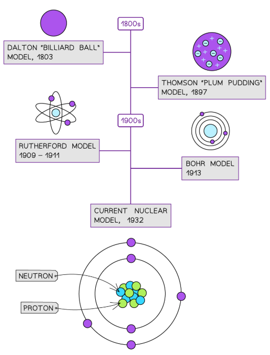
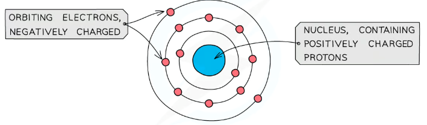
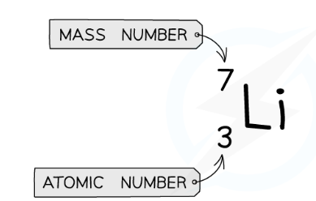

| Scientist | Date | Model & Change |
|---|---|---|
| Dalton | ~1803 | Solid indivisible sphere; all atoms of one element identical |
| Thomson | 1897 | Plum pudding: sphere of + charge with electrons embedded. Evidence: discovery of the electron |
| Rutherford | 1909 | Nuclear model: tiny, dense, + nucleus at centre; mostly empty space. Evidence: alpha-scattering |
| Bohr | 1913 | Electrons orbit in fixed shells (energy levels). Evidence: line spectra of hot gases |
| Chadwick | 1932 | Discovered the neutron. Explained extra nuclear mass & isotopes |


| Particle | Location | Mass | Charge |
|---|---|---|---|
| Proton | Nucleus | 1 | +1 |
| Neutron | Nucleus | 1 | 0 |
| Electron | Shells | negligible | −1 |
✓ Neutral atom: protons = electrons (charges cancel)
✓ Most mass is in the nucleus (protons + neutrons)
✓ Most volume is empty space
✓ Shell capacities: 1st = 2, 2nd = 8, 3rd = 8
⚠ The nucleus is very small compared to the whole atom — about 10,000× smaller in diameter

| Atomic number (Z) | Mass number (A) | |
|---|---|---|
| What it counts | Protons only | Protons + neutrons |
| Position in symbol | Bottom left | Top left |
| Unique to element? | Yes | No (isotopes differ) |
| = electrons (neutral)? | Yes | No |
Isotopes = atoms of the same element, same number of protons, different number of neutrons.
| Property | Chlorine-35 | Chlorine-37 |
|---|---|---|
| Protons (Z) | 17 | 17 |
| Neutrons | 18 | 20 |
| Electrons | 17 | 17 |
| Chemistry | Identical (same electrons) | |
| Mass | Different (different neutrons) | |
Why Ar is not a whole number:
Elements are mixtures of isotopes with different masses. Relative atomic mass (Ar) is the weighted average mass of all naturally occurring isotopes, compared to ¹/₁₂ of carbon-12.
Chlorine: ~75% Cl-35 and ~25% Cl-37
Ar = 35.5 (between 35 and 37, closer to 35)
Bromine: ~50% Br-79, ~50% Br-81 → Ar ≈ 80
Ar = (mass₁ × %abund₁ + mass₂ × %abund₂) ÷ 100